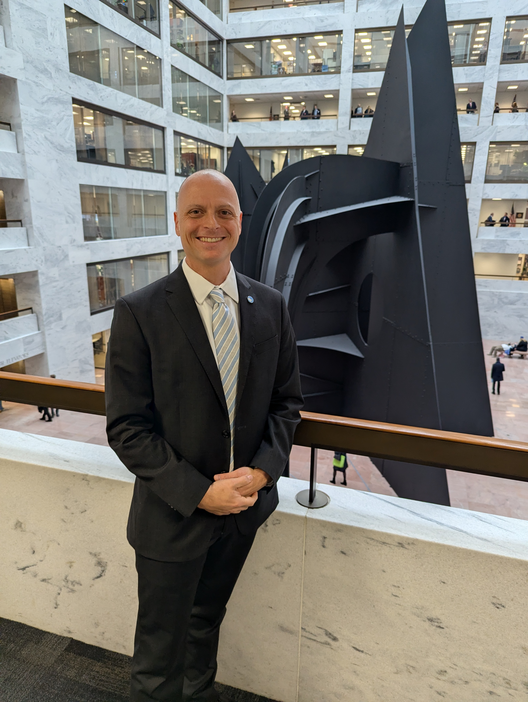
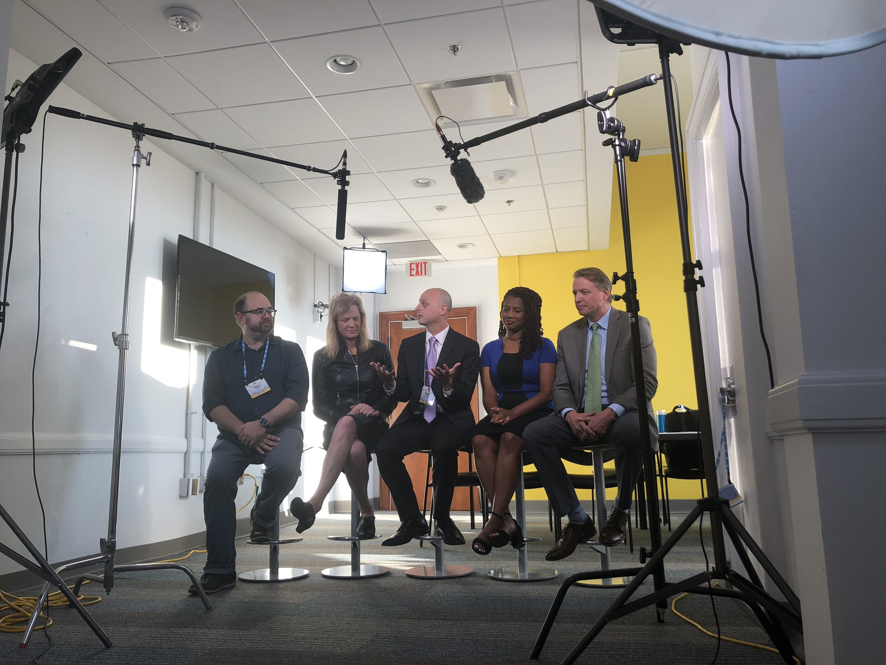

Start here
Unprompted
AI agents are starting to act before we ask. Drafting, deciding, creating on our behalf without us ever naming the goal. What happens to human agency when the friction of being asked disappears?
Derek Özkal · Kansas City, Missouri
Twenty plus years across economic research, philanthropy, and journalism, most of them at the Ewing Marion Kauffman Foundation, where I've directed $31.9 million in research on entrepreneurship, labor markets, and what AI is doing to both. Agents and Agency is the place where you can find my work about keeping human dignity, judgment, and meaning at the center of the AI debate. This site is the paper trail. Or digital trail, anyway.

Featured · Ewing Marion Kauffman Foundation
Led by Derek Ozkal, senior officer, strategic initiatives, RLE
From A project to learn from, and honor, 60 years of the Ewing Marion Kauffman Foundation, the Foundation's own account of the work.
Sixty years of foundation history sat in boxes, binders, and file shares that nobody could search. I led 46 volunteers in turning tens of thousands of pages into a secure, searchable archive, then helped design an experimental AI tool so staff can ask the archive questions.
What we funded, what we learned, and what we already tried in 1997 now take minutes to find instead of days.
Agents and Agency is where I write now: research-based essays on AI, work, and human agency, with too many footnotes (but that's where the jokes live!). Below you can find links to my current writing, Kauffman Currents pieces, Kansas City Business Journal articles, and other work.
Start here
AI agents are starting to act before we ask. Drafting, deciding, creating on our behalf without us ever naming the goal. What happens to human agency when the friction of being asked disappears?
New essays land on Substack first. No formal schedule
I have had the opportunity to work with so many great researchers. The job is to fund the right questions, read the drafts, make relevant introductions, and get the findings to people who decide things in a format that they can actually use.
Through the Kauffman Knowledge Challenges and related programs: $12M deployed across 60+ projects, selected from 1,100+ submissions.
Thirty-four papers, articles, and reports have thanked me, quoted me, or referenced my work. Six of them are below.
Invited philanthropy participant in the 2021 NSF workshop (regional and place-based innovation track) that NSF pointed to as part of the groundwork for its Regional Innovation Engines program (which is the largest place-based R&D investment since the land-grant acts). In July 2026, the program funded the UMKC-led Critical Materials Crossroads Engine in Kansas City, up to $160M over ten years. Workshop report.
Kauffman's flagship research calls on entrepreneurship and the economy. I helped design and run them: 1,100+ submissions, $12M deployed across 60+ projects. The 2018 grantee announcement, quote included.
Wrote the 2016 call for proposals that launched Kauffman's future-of-work research funding: before it was fashionable, long before it was urgent. The program's convenings and commissioned work ran for years and some related work continues to come out.
Contributor to Kauffman's bipartisan entrepreneurship policy platform, built with the Start Us Up coalition of 130+ organizations: a roadmap for reducing barriers to starting a business. The plan.
Rooms I've worked: OECD, Brookings, NSF, NBER, the U.S. Senate, the Federal Reserve Bank of Kansas City, and the Urban Institute, among others. Ninety-plus events as speaker, chair, or moderator, and the job in every one of them was the same: translate between the people who produce knowledge and the people who need it.

Talks, forums, and interviews. In 2026 I interviewed U.S. Senator John Hickenlooper on camera for the national relaunch of the Kauffman Indicators of Entrepreneurship, and built the briefing and interview protocol for former SBA Administrator Isabel Guzman. The resulting video opened the launch event as its keynote.


Writing about AI and work is one thing. Building things with AI and seeing what holds up is a different thing. Everything below is a prototype and should be treated as such. This website is one of the exhibits.
Laser-horned unicorns defend a rainbow bridge from the Grumps. Shoot gates to grow the herd. Endless levels, plays on a phone.
I led 46 volunteers in turning 60 years of Kauffman history into an AI-searchable archive. The Foundation's story on it is live.
Who is actually adopting AI: businesses, workers, states. Built on published Census, Fed, and Anthropic data.
Run a covert agency from the Cold War to now. Built out of the games I loved as a kid: Covert Action, SimCity, Conflict, Age of Empires II.
A math game built for my daughters to use this summer, open to anyone. They said it was "kinda neat".
Also inside: the Expertise Flow Simulator, a running list of jobs that didn't exist before November 2022, the Kitchen, and this website itself.
Enter the LabI grew up in Nevada, Missouri (pronounced Knee-vay-duh because it's a rural Missouri town!).
I studied economics at Truman State, then spent five years in market research and managing healthcare certification accounts. Two years as Director of Research at the Kansas City Business Journal.
The rest of my career has been at the Ewing Marion Kauffman Foundation, in two stints (2006–2008 and 2015–present). I've worked at the intersection of entrepreneurship research, labor markets, inclusive prosperity, and the economics of AI. Along the way came an executive MBA from Washington University's Olin School, a seat on the Foundation's core AI working group, and the Legacy Project, which I led. It turned 60 years of institutional history into a searchable resource, and the Foundation tells the story in its own words.
One constant is translation. Researchers and decision makers rarely speak the same language. My role is to connect the two so that research can be actionable.
Agents and Agency is where my current writing lives. The Lab is where I experiment with what AI tools can do, so that I'm not just writing in the abstract.